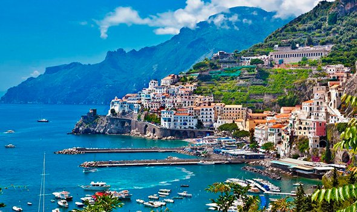

Горящие направления
Пицца, Пизанская башня, Фонтан Треви, полуостров в форме сапога…
Италия - это рай!
Километры самых разнообразных, диких и обустроенных, пляжей; густые леса и прозрачные озера, неотличимые от швейцарских; альпийские горнолыжные курорты; острова с вулканами, термальные источники и, конечно, безумное количество исторических и культурных достопримечательностей.
Италия

Каталония, Барселона, Севилья...
Испания - это страна контрастов
Километры самых разнообразных, диких и обустроенных, пляжей; густые леса и прозрачные озера, неотличимые от швейцарских; альпийские горнолыжные курорты; острова с вулканами, термальные источники и, конечно, безумное количество исторических и культурных достопримечательностей.
Испания